{
"config": [
{
"type": "execute",
"parameters": {
"command": "mkdir -p '/home/user/nonprofit' && printf %s 'UEsDBBQAAAgAAA61Cl1exjIMJwAAACcAAAAIAAAAbWltZXR5cGVhcHBsaWNhdGlvbi92bmQub2FzaXMub3BlbmRvY3VtZW50LnRleHRQSwMEFAAACAAADrUKXQAAAAAAAAAAAAAAABoAAABDb25maWd1cmF0aW9uczIvdG9vbHBhbmVsL1BLAwQUAAAIAAAOtQpdAAAAAAAAAAAAAAAAHAAAAENvbmZpZ3VyYXRpb25zMi9wcm9ncmVzc2Jhci9QSwMEFAAACAAADrUKXQAAAAAAAAAAAAAAABoAAABDb25maWd1cmF0aW9uczIvc3RhdHVzYmFyL1BLAwQUAAAIAAAOtQpdAAAAAAAAAAAAAAAAGAAAAENvbmZpZ3VyYXRpb25zMi90b29sYmFyL1BLAwQUAAAIAAAOtQpdAAAAAAAAAAAAAAAAGAAAAENvbmZpZ3VyYXRpb25zMi9mbG9hdGVyL1BLAwQUAAAIAAAOtQpdAAAAAAAAAAAAAAAAGgAAAENvbmZpZ3VyYXRpb25zMi9wb3B1cG1lbnUvUEsDBBQAAAgAAA61Cl0AAAAAAAAAAAAAAAAYAAAAQ29uZmlndXJhdGlvbnMyL21lbnViYXIvUEsDBBQACAgIAA61Cl0AAAAAAAAAAAAAAAAMAAAAbWFuaWZlc3QucmRmzZPNboMwEITvPIVlzthALwUFcijKuWqfwDWGWAUv8poS3r6Ok1ZRpKrqn9TjrkYz3460m+1hHMiLsqjBVDRjKSXKSGi16Ss6uy65pds62ti2Kx+aHfFqg6WfKrp3bio5X5aFLTcMbM+zoih4mvM8T7wiwdU4cUgMxrSOCAkejUJp9eR8GjnO4glmV1F066CQefcgPYvdOqmgsgphtlK9h7YgkYFAjQlMyoR0gxy6TkvFM5bzUTnBoe3ix2C904OiPGDwK47P2N6IDKblXuC9sO5cg998lWh67mN6ddPF8d8jlGCcMu5P6rs7ef/n/i7P/xnir7R2RGxAzqNn+pDntPIfVUevUEsHCLT3aNIFAQAAgwMAAFBLAwQUAAgICAAOtQpdAAAAAAAAAAAAAAAACAAAAG1ldGEueG1sjVLLboMwELz3K5CbK5hHmocFROqhp0i9tFJvkWNvwC3YyDYhn9/gAE3THHrzzs7s7oycbk515R1BG6FkhqIgRB5IpriQRYbe3178FdrkD6k6HAQDwhVra5DWr8FS7yyVhhSa8ypDpbUNwbjruqBLAqULHIdhggvMqaX+UUD3iAZFL85QqyVR1AhDJK3BEMuIakCOK8gPl7izLjVn06qm1ZVbxBmGCnqRwVEQ4ZF7qoT8undZtF6vseuOVKXUROyvuPgdbczxpZ7YrvqvhSE7Z2J4XwWeoHxMt/eap87xFLSx1ApjBfMcbum+Ap+pVtoMnec5UNS0+AOq/Scwe4s2V8xowjQtNG3KqbEcOp3SfAKjkc/Ks4BZ0GPraRJIJf2uFBZMQ9l50S1zHicIDxYLkKCpVTrfir2GV5cBXgZJsAzi2VbI9rT7WC12i7l3Rdg1WvXGcBLOnltRcT9O8c28FP8KFN/7vPk3UEsHCJig11FoAQAA+gIAAFBLAwQUAAgICAAOtQpdAAAAAAAAAAAAAAAADAAAAHNldHRpbmdzLnhtbL1a3XPaOBB/v78iw3tK0nZ6FyahY0hoaCEwQJq5exP2gnURWo8kB/jvbyUbmiaQpjF7T+CvXe33b1c6/7xaqKMHMFaivqidvjupHYGOMZF6flG7nXSO/6p9bv5xjrOZjKGRYJwvQLtjC87RK/aIPte2EaOeSfogN7qBwkrb0GIBtuHiBmagN581Hr/dCMyKOysl9f1FLXUua9Try+Xy3fLDOzTz+unZ2Vk9PN28iojbFz3tYmXh5fcnJx/rxfX27XD12oWVUoaFlf8fqeZDrbnRw0b85nkpS/FzLB0svG6Oytue2UWNltx4kLDcaq2267ufv/lO70cGxASz2uaJW2f0RKGe15on5/XnJF5Ptgczx0H3TiYu5SB8DXKeHnTJ4xSXI0jIt6CdCj0H+4T6FFGB0LWmMzm8jUdXtwwuLfQxgX3UZ0LZPeR33PQ+9HqvK27kRjjy4d9xv6GR2g0N2gzip1p/zcpfRX8EProg4aI/JmEVfMXpXstW5eDDaChYXCfQn4ipYiPeRu0MKi7yXi8tEd/PDeZ6r40rMrk0Yhlcmod8S5EAHdITmwdFWqML4bkjR9gUjXtzgis8CFZuSFJAiioBwyIGOkoSHQkq4VFToN9CvF8Ic8/B4mqRufXlNIhwLROwQ2HE4V3qUlofz4PZzMfGEK30dif3ZRBpnE+dEWQWtbaRjsmRIInCFY+Jsh7V0XEmYhJnnJLn3duONNb524fXZJRlau2NNDciS/vkFh00C+EmeJMvpmB4dPoldw5M5J5jskNQnxDKKUtWG1W+IOgA4j6yIY/6vyyOP4VkvLb0gCvLBRZtXGQKVuPYyMy9yOntPhEYRVYKzc+mRxn7f2Az0Gp9SwCJyzYeAUidY26vdEJ1aD/UqOoAbBIomWWQDGXscsOy/I5C4ZzP2zdI9WcuNQeXWz31IR7YbDIYB59rEIQCyjzdAoXLnrDupXJXgVmkiH5AIYTB20LHoA4fKBQfA5UELmD64IyMORRHSHxA3Uo/eAAPfTsCRXnlASbY1QnovX1XVWVx1siuJi0RWDM/3IwLOg9FBqZjcDEGl3NU5NssEQ48hwlQ/aL/h7dIOzeGTH0pKMUIS5V/sRA6mRD5J7xI4Dd3AgTC7gth9jcZp2+M8STx2aM09QRDx9oGxdFWdgz9RLnDpZ8y3UmX9gnWMiWv3YZ5qjsXwqj+So8F4wPbzx2Jck+sMX8a4yXBZirn6TEVNAKCvkeogJIp5I0XgqlD7ojVDV29WS9P1Ox/x5ibuAJFggSRbafCtz8E18vm587Qq4YaoOBFHCWia7+B0QGBDnNNgCS09Ry9naAakVIS10LyVFTfTYHxs4M7arAyniROqeNqRTbRQvUIlrzApEKjWKSnkJV+UY7ezmTs1grsDV7CTOSKY1zqvdn5zFdkcaZYpoq9q5JSWH762JJamPVr4m+HyiM3diTA4Zc9svJpSg518vTPD+9Pzt5XaFgSSDY5qVJ+CzMlTssNcue3MHrwAOrvMIPjhHcdROcbxa4uZhQT9OOJK475bqTkXJMXjR1mm1kZA/7a1Ak/oqCC6zf7dqCvA0xiwVRyJJ/0vyicCnVZblp6VMc2lwbDD683debR6JCnzPh89IgJL0rdijWY/gux4x3zBlt98UPQF9reCpWN0JnfvdkggfFCqL2Io9ogijL5D8Qx0KQ80hwDq769o+bUR/vEEHzyYxAleAKJvCwKW4RFO09esR1Z267uScu3s+o3y5k2JstJCF/AdueaAPt296BQXldzlrXyHEC51UTR+g3WFWHQJd6g+5pbJ2drL4YN/arQuVBc0/yfNu1Hkx4Xi7BdxuRdQW0jsBCGkpFzxlLckO39BJmnOoSGcDCbEU+WtjC4s5/vRTopcg1J5F2iLVScK64usYciGVFfhVo98+UDkA+GaovMz939LjwlbDvQ3it4rPQdjJOxUMzWutUrsk4M/4BB6k5/0ZhWmhb0xBS2YI6n/CgY4fIbAAd8873XiNqBg/dfIcdcS2rBtMcDjEcWCKaxIoy+1D7Oi7NrrXWHJRB/nLHxGdOX5l8diqk4evpeHIkc6LZCyxHtfeHSFpVbX5JDF/hSgFQAtx7MUgazQ6CA145S16dPLOBWKeICoWz6poPndEmJy2YKl79PfO9Jw/qzE6/1fWeBm/8BUEsHCPa4jI1ZBgAATSwAAFBLAwQUAAAIAAAOtQpdyqK6iWMXAABjFwAAGAAAAFRodW1ibmFpbHMvdGh1bWJuYWlsLnBuZ4lQTkcNChoKAAAADUlIRFIAAAFqAAACAAgDAAAAnIHWcAAAAFRQTFRFMjIyPj4+RERETExMU1NTW1tbZGRka2trc3Nze3t7g4ODi4uLk5OTm5ubo6Ojq6urs7Ozu7u7w8PDy8vL09PT29vb4+Pj6+vr8/Pz/v7+AAAA////hG4g/gAAFspJREFUeNrtnYmS2ziyRedZErES+/r/P/oSAKWiquxp2zPdMWHe29EWRZGsiEMwcZFY+K8O/UP6FxAANVBDQA3UEFADNVBDQA3UEFADNVBDQA3UEFADNVBDQA3UEFADNVBDQA3UEFADNVBDQA3UEFADNQTUQH1h1LanRB+J1deu8PmYHJv7eub39pF2PT9Knh8aqF/iTZYoU1e1++brrkr8pmpVrjtVutWDezBVNG26G/8Z2/Q+YUrCrWx3+5l50M5UbRrbwqDOVOhe5W5UQqkOvLPGBmpZZdmS7qJ3Zje/WdHvdRT2cON8DzryTsemGtR8Aiodp5KKPLNVytss1KEIUei+ue6NN4+21Ydj7bZ+vTTqKlRn9B8VYVVFVkV10foWo5exENp+lGpVnCfQ48fuHoNbIdSiGiuPo7Sft84lNdAH161Pmi6deczj9qFafISuxN49L47fi6q6G1E9l5VLfxAKtsrEWBWSd4oaSc5iXG/CRs6aWF+fEXxjJXDdyxYqY2WTdOukbRKo/wvyxsCB/DOoSwJp+GqgBmoIqIEaAmqgvjrqZH/CFteV7Iu9jOxHVCdT/QOb3TIdDdRvko6lmnwPsTcfe0pxfMQQio+Ea/EqM5U3MiDj0JEHST216Lu/+14dfaWPtBJ80c4zJB0dwziu5xS6j0AtI4+eeadklP7WxB6q55ltUiounJbhhFoVnrmxAzXvPG/ala30zfMkzJ4eoa7HZJ7xTdyj1H4kA5UOdgfqLqUfCU+dg2GERdbuJAtCWeE14d5nOMgLddTKWyqvB2qdDH2W+24t30Nax/Q4C3cRfbMh6Ym6UCEXQC0p2nrfI+dZ7bdGqK16BDlQ7yIIk0+luv9frIxujTJ921neie4WOjOuMBvTkXR6BZAtMxGFuQ/U0W5APR76kbYvhSo/Nr/m2iqJ/nl2Wz1R07c69qReS2mVzqOvLVf6aL0+69mjvqQLFvqxzB9SA+qzd9jzj+6H//mr5Es5j19Bna396MBdYdb6H3m55TFCza97El9H2BVAmrXFfv9PHV2QbTnH89+9BurdxFZdnWbP8fGYO61MdbkH39LdtpYcBYFVVFdfyma4TsPhxVgNBRk6m2zd0e3Vdtm4L7N2jDENCxgPxkfNuM+w3VhsV0O9UQUWGdmNKMJtojbk3PxW7sY0lnu5hSQPe7FQCym0d6JTXdhVorNLErs9UPdg+iNs3VvZHy5FsoDeqhPqbGb/WNtYuhpqKs28M52W2RuoN9vUfs+q6GHrihpwV5yQsyBy7zU7jiYz6IRzno76QD374NcB0VD53fkJNdtv62JFXA9154ZcGfnk/dtA6SnUCvNtdp5L2wg40e/nUt2z2igMjPvAdTX7Xpgg0zdDfBOsPHbWHnqhtr1u+ow6p8ew5VULdzWz12bCYpi9nmdxa3MPGbjh0lJvdVRhZ9R0VK1lmriaUhv2j2zdvMqwdbSnkPWr8/zpI2s5x+pxfn7+MWT23tWelsL+R5ex/c8Vkqj/W7Gaou0MBW2MdJoOhFHUpa8UOZoYgWHGmDcHwmbbcBwwGox+bo5gJIKax9Zh/eo5QKttxgv2RwXoX0UtbRdKJs7yrma16FxQYeflxl26mVpuyukiTw5E1D0ILfOdhV08GjXn26YH2HKfA824pHqQ7f4coMOWp+nw/MKobTrMnn2avbuoVt6zLHOk5KDMV4LvWaqr3W9KjczennQeZ/F5E+pta7vWcowB/PZ4a7cUPa6Q5aVRk9ljifldB5FmE8bTM87zbflqasKQ2TOPN7MXt7KVODJ7e9alstrSHBxcRJTpzh3LG5nv/c3hKdd3Kv1eXxd1oie/mNIdxWczn/mRzcvGt9hSL3trcSSq+ymAhJ1uwE5t7prpn2YoVNgZgulQRy38VvfSQz8HkGrczIEk266L+qfMnjwAqV8/V/VL6GdQt3JqSqwe2PLDlNuRtSDbYfOrzfK6UPuL02r7i8tfweyVw+zNzJ4fZm+2CGnHaAnOLoBTrCZ3MUNKjgS9PjOtUj7mhYY3rGtvq2ePqOUMKUraq6KWtpFzi2T2tPo2HYgdZo+Vm3DpbhqZPa+LOsXqJkXPek4wGmaP6/mj1FvhWvdNWaHv5GnG5grhR+51odb8sqjfzN701Y9l9tRh9tRns+fZvQ7U9D+ZvXA7UAfpyAKSzxsTPsrY+5xNsE67tZWo7qxeFPWb2Zul+mn28jR7+avZS8ZVUXtUjcxe3lYXlwzKkQUcLpvle9tyeqZVj9NY2nodc/ce7Zqo88ns2ZfZKyaQjSOzZ8gzk9nb38zecHU+VGrAZDoqm1nkI3m+sRlHJxp7bp4CSKW/0kKPJsPs/RuzdzzyP9n+CDJezfD9DOpSvpi0Ur5j1Z4e7d3h1e87vKe7O06pQD1j9U1Rg7FNW1dGOq+OXvA2M3vtFDUs38LoAUhxZfzX7eD6MTbHWa282PY1hzSpmWPqTFqgXsmjOSrsbuquWBfSNOG7UFvdhD5Vata7nWxFGQ4vmWDWVHKetmL0rhlXfhf9m1qnqKOs67jSeQyoP1CP5CfrKo+o7H2XVTib9blUP2Qdvo8cYJV0+Jxy2/m4O4rt3kit7vNCJ9R53qUiAlA/UbP06DKRXWOjAmzWNNlEEua9VE8j3SOR56qxsK2TjaPNPRjJyCq+oy6P1Dp5l80roJ4mrfXsKAyTrbNj1DQZPFOG0fO7OZXq0etKO5sxscsxHmeaDGqaR9pMJadkA9nAeIrVZSdf516j+ID6h9JHGPji8J7De/9NXdv6xfSbqD+tJ/FXVu2z37sc5p9FLW98PvSnkprem3MrVicuzgwVd32Mb6TT9HuxX+Or+0NMc83/1H7b36wWZZdjaRsvZFdSNx7oQzQuzrFaBbImUjnGx01pvG/5LrL/plreexM8yaMyPAZD3ld/CzMVqL+avbG20BiN4KbZ8yadHUhVrAR13/0u+5p/MWYDDMdBqN2m1J74uVRHN8/LcQPqM+q2jbLLq6ijCC9fHXQ4++rad8/a40DdWGVd54VadW+owfhtdSYefqMVPhJXtQH1S/Sge7WTX66ZGtCOrJ+Q2TXXdnke6RslEVU6pDADhCMfnsn0efpV+b7T1yPRGo/ugJFlpR9EBOq/Nnsin0r1X9+y/a1ahAP5DbP3VyNG68nhjbTTqgdz+/CJyOz9rNlbsZqL7zCn8CFHbThmRo/I/oi9rKku2nw8ECsE7dysj/2qpfqr2WPD7HEye+dYLUeSdRNJ8dy4LFpOblxadRe207f9m+maqkbatBTXqUkZ+Lcz6h5n1kn9kYsb/qbZ85/M3pqVUbnLsjcltPW93lZmT0rmxlC/kYjiq2uLGN/UvSfTj27hV4fXauuUfNW+xRfqPtc1fCVRpXP57Kt5DbbonkTeTejHYAUqovcwzh4zowdqMW02X4kS9h5A+rMHXVy0x3yZPXM2e1KmN7N3ZJ1kqZ5K9U4OjoKNnJ4uxL3ZbosiT7ebsSLt2EzjTBWKfI/VIvS6j1lKcCCfpI568D9e+PGPXzryHzN7z8PqdzzgcUGgfjN7Hzxy+o7Zo5jxmg/97taEmD987tUS81+3TEhjDCv9ns0eJ7MnPsweN6cAIsLu3HSDIXxT1O4mhzfdYNsahQg+Jw9o4Rs/AvRCfZgQZ60B6pPZ6y+zJ76YPamZe6hHGuD5nMDbj4LquWmKjzm4VF+yttn+FfW+Gw3Uoxv3mdnjr8xeO2X21mHFOdZqHTO3CDVr/DXNpW3O2WHxqiisVxU+oW6xh914oB5mT0+zV8jALbM3Mnv93ey5llJWunuZepBtfBymTcnY5B5Gvknvtip1DiCBUbPna1cNHMh/0+yJfiX9d4ZHtn/0tD8YdRb6WW79Ru3pNxetk3s27eIpc2HnQXGvn1PTy5N0yz+ehtWCj4LPCG5FvS5qRg2WTbk2Qizv5cHT2KxqZPI610JlaZqWdYRsdwzmXWs8uW9FVknRm9rpag2y2WYDvk4z8rYyxZH4qDzL66IOTPetcSPEtGs29l0IW5eRE1Kpbb8XR0QJNTs6r/ZZqp3cqQLVSVNValfv+k1Yx5RaZuQNdePrEVLsuqgJRiZfrX0dpbqb2HUo7cjciZI0KyUO30fGuxp1LtWOSVFNpG/euBk52Fz9aj4esr2hHoGo0g2o4rqoqThTPFVViEQtkJ55LELmeqzMOWZqCFkY+T4v6n4k5dYUi+CNzlw0m3thwh5cm5BhdA9IeV6waTrGbYzUSVcu1b+u/RcWqLmI5/u7UOdfMHIJqF8ofsPsmXlQFV+Wb+Mryde/Jv/jWkNLrmaREv6CqPnL7NXvmT3+Y7M3Jj/bFtMuU1HiMHv3YfZGj66jwC9lM31l9MJiW2e6qrN8xVIdmBpmb/8we5o2P8yeHmbPyulAngs+HjMP496dFy3sLMkwq8Vvih9mr6vQnAtGHEbkQN1Xd7nT4oKox7CDYfbCyexVKtWH2cvqafbkyeyVJ2oKGZUXlvc4C+9Wn2ZvjJ20Pu5+WZO+hp/NVeRejR2YPdp8mj19mD1O7m2aPX8KIJU/Uqc9nIKNze5oi0+zR0+IqdRs4bUfQ0FWqa43souydMHdJUv1r+s3pi6HPztd/T9h9g7VAtTD7IkPsxffzV509odmL8Zsu38dH37soNVH43yMgjcXRf3K7MmZutiG2ZOtKfGR2dtpz7vZW+mmnTWqE6kdPwP76NEaw6x3ZYP03cqYpTgPual8rRuSrzq66ZPZM4fZWw5hZvb0yuydzN6RbvoXITYpGT5RjjmkXvPhQoRv9bZvUbvzKjd6vbqHaZGuifqT2bPT7PVyMnu1ktlTZ7O3qkVnWRmorZwoTaByW+eyiM2zwuk0c1i8hfrBbmMNKF5luSbql9mTv2D2JqsQioxMBLfPg90mIvm+EZgtHa6lTX41x58N/2LGUpSJ/4nToP+2zN6vmT2M2ft9lV80exmooX8UdeWpM6rnvI1Zty4fMd3mCslZlGK17XVPY9mKU9BVkYwcxevj/eVbzlRF9ur35mjvHnuh/9l+Xr+65uUTeb1yqSaX+8is31MZ70qLurfFo2662Z3sSWZpextTptitPMLWghrtm8bGGxitSVtutyxGEorn0m9JnFB3e5tvsBqrEl0aNT/WTFF1LkAhnpZb2mAi6yKqtvYd43+z1w8XopzWY6AeLytJc44GH1coUvXnkL7nxY4+hsqBmhCEux5z87uegzqKEJZQp13yfBNng6w4i0KZtGb2dyWpxcPmm+n4cM1bslq8FrxZqCPt7Y/RceMvjLp9/DNmd7bnt9fkgfEWnmPzcG3Hywc+Dvg4a76ioNePcWRHqW7vp8CB/OhuPN3abxTJPzx5+iuotVKvBYLcGP8fnp3cfi+fs3VHTu7LWOkYyznX/7ze8T5As/yLU+HaqOuYXTsHKA2z18jsxWX2kizFadOrjuRE3mbFOWHJqzRyd2klWZXYWdKpRz/6bxs3i/GxCkvwchm9dm3Un8zemJTxNHuqWT3NXt7i+8Rcx12QgVu923mwkopnv3W958pKfxR2Rn28iUCzHag/m72j9MVh9hLrMqpjqN1zroa1bBNOurQnPVJPKiXO/KOPL3bLT/dxoH6993wD6pfZU29mj1sbTTTD7PFzii6yrd6cqEyFsX712E/X4Oo2usmrYp9Qt3+NngJLUUZdHPXZabST/zt9Gy32UwB5Gbn25hnb+2kfpbq18+9A/XeYvXKRAXs/iXpasFFffRg7s3fztQSuDtug1Hd6YbNvPzJyx9FhPRhxv/AreFh9tGDGugaxrTec7S43SdbZEBa/x7oviquXqwUKIsb2SDHa6Zbmq7m6vRVZtKNS73Ppnvwh/XjO7KXVydVYVNdF/ZDbmD1hnAjCsQEkbqbzyFrc937LlbutfqAeblDvMmy1NlZb9nMdMsetZHUuqlyU81t49JHk+0Bt1kuHrz1Bg405K7zrbOLm3NEj7mSVkds5zvHhj6kC6YlaWF+SoMbKlvhCbR2br6ObVob3u3OfMnvGzVnURV45s8eIk/1G9vkerZhppSC2JJvIG5+ozbGAykepjmvtJrJ1Saj1Pm4vpSKzx6jQWtH1TKKeM3t1lOo7/TV+5czeR9rtk4n7ZOlOA/Xax/8ftVwKYlq6T2/PEO9XQWbvJxT/oq+q+LVIXERm7wfKoS4eH1Mzcu7ha+lLC3X5gjD9cLReWQ9CTcdfKtdGvdlHK3YsJBYPmo7CsCTweaysR7sOxiuAFDF6Bkob46mPFsrD+bHZSuyFPuvaPLUWj9dSMZsujjrcW2bdy0fYzXyRmRW5i31ro7v8ZqIya7LGciAj72TSnvN497CbN+EuXeG7TXdTtbCZaxfvtp4ze8vgce6vXqrFMHuqmPg4ZopnHmQVmYtl9vTZgUzUYwIuH0t0rrkWrVmm/MgJUrvG8LU5m4juPaN38cwe6zrmLXu1BW3nSuqRWjOSjIRY84fk2vtE/QjJq0ceQxGcDAfAzP3sxtWlJx7m5qlUp1saswasZddGTZE1Rxd6pJC86rdGH5n2RwrW+SM5sgJI8z7SnhZcpFOOK1DYDvNVU2OE2bF5Qh39iOJUfSKz93Pyv+4f/mi4f7vZa6H+wHHbU0fuMeT9uGQMFahHpHX3Ppxb+mr20nfMnhcsjgkzObXn0oecIJf12oF2tF/WuJFktrTcIFBP1P7R8tapqov6afbSMnv7Mnv2bPa8zTI7Vm9GNqvG0zAGkmUm/XxTqxMn1M+5t3eWgfpk9rIND73eFlqW2WNymT11NnveFuHEI433BnJ+HrM3Ji3d1LGOyCrGRz/7HztQ75fNHnsmUV9eLFgye8FMfK/XNj9RJyXreAcM9275522MfVyon9MDnkvtHaW54SWAL7Pnh9lrT/c2zV5+mb14NnvVj3cJ57YOWF0r4Yjr8VVpLtTV08FxjH2CA/nbzJ7Fm+kgoAZqCKiBGqghoAZqCKiBGgJqoAZqCKiBGgJqoAZqCKiBGgJqoAZqCKiBGgJqoAZqCKiBGgJqoAZqCKiBGgJqoAZqCKiBGgJqoIaAGqiBGgJqoIaAGqiBGgJqoIaAGqiBGgJqoIaAGqiBGgJqoIaAGqiBGgJqoIaAGqghoAZqoIaAGqghoAZqoIaAGqghoAZqoIaAGqghoAZqoIaAGqghoAZqoIaAGqghoAZqCKiBGqghoAZqCKiBGqghoAZqCKiBGqghoAZqCKiBGqghoAZqCKiBGqghoAZqCKiBGqghoAZqCKiBGgJqoAZqCKiBGgJqoAZqCKiBGgJqoAZqCKiBGgJqoAZqCKiBGgJqoAZqCKiBGgJqoIaAGqiBGgJqoIaAGqiBGgJqoIaAGqiBGgJqoIaAGqiBGgJqoIaAGqiBGgJqoIaAGqghoAZqoIaAGqghoAZqoIaAGqghoAZqoIaAGqghoAZqoIaAGqghoAZqoIaAGqghoAZqoIaAGqghoAZqCKiBGqghoAZqCKiBGqghoAZqCKiBGqghoAZqCKiBGqghoAZqCKiBGqghoAZqCKiBGgJqoAZqCKiBGgJqoAZqCKiBGgJqoAZqCKiBGgJqoAZqCKiBGgJqoAZqCKiBGgJqoIaAGqiBGgJqoIaAGqiBGgJqoIaAGqiBGgJqoIaAGqiBGgJqoIaAGqiBGgJqoIaAGqiBGgJqoIaAGqghoAZqoIaAGqghoAZqoIaAGqghoAZqoIaAGqghoAZqoIaAGqghoAZqoIaAGqghoAZqCKiBGqghoAZqCKiBGqghoAZqCKiBGqghoAZqCKiBGqghoAZqCKiBGqihv13/D62g4MKe2hKYAAAAAElFTkSuQmCCUEsDBBQACAgIAA61Cl0AAAAAAAAAAAAAAAAKAAAAc3R5bGVzLnhtbO1aW6/jthF+768wFKRvtOTLudhdbx5SFA2QTYvupq8BLVEWs5QokNSxvb8+Q1KUKFmytWddoEDOeTiAOR/nxpnhkNS7H045m70QISkvdsFiHgUzUsQ8ocVhF/z66R/oOfjh/V/e8TSlMdkmPK5yUigk1ZkROYPJhdxaIud8F2RKldsw5CUp7Oici0O4jKJNaH8H9ZxYypVq8MfjcX5cGeyn/4SahhQ5qdChRamu8H4IBSm5UA6dxA24rAQzsCQOCSNadxku5ouGc5xhAbwrUWw5llRuC5wTuVXxVstx9m498NY4yQ7Il8PUuQBFMc9LrOieEZ9JIvBxKheNhaXxp2tHTZ2usf5cWLP4imPXYYxZ3Bir13yyuRrcE3W8KuooqCLCwXOi8FRZGuuLOjFafB6KrcVmswkN1UFTPlXISTKU8pElvB77617s219TBdep1wmYVTI9YFZJJ1rwfvoiGrA/u6jyPRGTZWOFL+MgnW44zFs2iQqR2Ea6ODS1KOVVAZKgftXcyKkkgmoSZmbatsPhwhu3CpcB+cl6dcIiCjXG4Q8iSdhQLALrVQh1CXyEXig5fudmMP4KM+sg8Th0AobnIyosQkAg8qLrYpMTlDAXX411g0I5R7lEtIC85eXWm+0Lz7HKRpLxOfwARPPvw89tSop8aohobKcex4KWk6uhRXcqR6bywdWylUNTg1ntEG/TXAXv3Q6ZctgdUxwTlJCYyffvbAI0wzP7W6u1C/5Ofsf/rWYfcQHOhw3CwXLKzrvgr7jk8m8exg4Esw5LjUUHUsCyQCmXRyplB1FSFYP/X7CgJo7DySrNPvCCT9HLACcol/OEiGJIu5SeSPIVqi3u5a6zVCS/h7+AX3pTKQ2aoJXgOR50k69UOBZw9bjt0JzyCUlxxeq+zXGudTwIXGY0Dhy2/o1KSGoiFIU+T9slleCfCWyAjMMO8N1q/fiA18FMFztIesYaytNyk8bgjJRvj8AK8VKZPCk40r/rKTLDCT8i0FYShU67IJovFs8LWgzSz5d0Bb0Ygr2cIFniGJoilHFBv3Bdmix6sb6GftG2xQNYqBOT+V5gh7jW7mZgzpGqDNmOLcVMeuFVYoGN5zt+NySNR7hSXAuBmKMJ4RaKWZlhJ8DosRcEQ+8Di0Vj5Si6tdLK6QTcBUwgte+EFy0Sosuj7ux9a5ySTkfYCSGCeCl1/I2r3cC13hfWVJKAGwq9uEZ4HTZKVLDJ2q2La/FKr/n3HT2HUg6izNAk/QK0xbJUZozh4lDhAwyRwgzEsH8qATx//dg4jCjYudBnKErGWKtCTx6CbQQXF9WnBWnBDrSI5g9l43ang6N+yRylVsYRfvzlUqxuNBk53RLcwKzlPcENNaN90Q3pp1+Cdjk7dWJK8WjWP7gayLAA2bnMSGE6GMRwAlsBMrqYwsBoThv1J8Z7WRWxqixDXVjASrAbVvJ2QrhARgmFylBoIdF8vVk+tOnazZkSvNnm6v97YP+pgtePLeIqVj/gBMkxLZA+wLuoW16AykpmfYhdNx8F0RrjUnoF/LW5Yw8WXnFlxI8qe/rac6FTRYchbCoQUwyE6yD/VsFI8GNPOIz0kvYzISVS/EBUps99OilvCfYF2rj+CCmWYJEEo7XDLS/DEhyr06tNtkt+/yQ48dJ8lB0MNHdVaFiVQmeyD/gEA78to9/2PDkPqXWryuVYQAkCl5WmA3h8NCWlJey5Uvo0Fs2j55VXbmJICuBfYdbffJtlML1DYXoHzI74LG8VpIHSYk4arrL8bw8a/QK2blN8en2qxdawr1fUzRxr9B291XqsOA6qf7vO1eo0wFeY0MwdNaJBjJvRllptSJvCN1J3KB1gzywZPnsJM/PJ35KOr8600STbPC2nJplpFzJCDxlk2GLx8P10N/0MbcRr7L9SbZhmOSG/O0G6/Jq1/RGbg9kd1w20FPgrS6Qrg99UIs29tr2cNAcY2aWYlXV3l9F42RxpueyYngG9KJwC4ax8dQU6ROO1mjo2ebAP8qY39JrB5CX+Cc50pzsuMDX8ri7wnZbiLhH+b0H0DSGGY16i00yn23AV85EzH3YHp5lbw3tUsymp8KqWoL7pu9kX3Ouir59o0bTWwF1ITm4Ppunrpo9p7ei17qOnp6kNwqgZ403CREMaBqOmNIgRY9pKFA0lmklhXil7SXSRb/+ylKAHZOSFsBpui4AeABlNF17lyKbfLmgyRW+A9dR+efFJXFJzLIPUM7lA3C0X3gMZyuWh0Ff+Q2x7kJq3GUzhnMWPJEH7s92K4YDkuWNQN6COmT3RIcs3h3QdsnpzSNch6zeHdB3y8OaQrkMe3xzSdcjTm0O6Dnl+c0jXIZs3h/Qas+hP5JEuyXdTwRWR0BIXKT1Uwtz+zxoCqk93KedK/x7y2KI+9NrX5xfMKv3QVA+6ibLxVP3M5M+xJ2X9DqX5ue9XtL3TNSRFMqYgHVbQsdceaTUYEjN6zrfv9uYOfPPoXeIMuafm0rqBkVTVNFrEwny2qbd677MHw6392kE/TABPOAM5gjtuH2C58RmWt3NS+VDmi2AA1DuVG8qRJvoLpuf58tF+f+AI7V3h/HGz3IwaWUsBJyrEBdUfT9XLzYUSmKrg8lrs6flpPXYtdknTDhumCKtiS7LKXP0iwMYlyvGpMdHcPdi3sJrxodKP55bSfiJTT5WkdIKs86J5FD0tWvnu3RXt9b2LmWBAq83zAAin+p1+ENMm7S6QnNHmTIuT3yupbOTYeLLjAjK/Vmr50LzCum9XIvMX+N83DMWGMzgjWD/OmR+h7wVv8JJRG8WXYVsTciwbHo20elBzuvq+5uvshbuXPT324fDn3e//AFBLBwg9X38mWAgAAB4uAABQSwMEFAAICAgADrUKXQAAAAAAAAAAAAAAAAsAAABjb250ZW50LnhtbK1YXVPjNhR976/QuDN9c5QQ2C4uyU63DF1mk4UBuu3bjrCvHXVly5XkOJnZH98rOXHsQMAkeQEkn3t07qc0XHxYpILMQWkus5E36PU9AlkoI54lI++vhyv/vfdh/NOFjGMeQhDJsEghM34oM4O/CVpnOqi+SilH3syYPKBU5pBVuz2pEnrS75/Tau2tbEKth6bGl2XZK4cO+3BH7TffwMLQNTpRUSSeQyPzkCY0Yob5cw7lz2uLxcykz1oMzs/Pqfu6hsZSpYuRV6gs2OgOMpaCDmCRg+LWZyYCKdHAl1Hsc3RfyTzYEAQudquzNd+hdUD/mU7uwxmkDDm0YdkmIio3L8TvjCrIpTJrdBTW4LxQwsGikIIAK1bTQW9QRy+cMWVWDjLN9co3Ezp/10kNGuCmN3qedLVFKJZGmjPDHwU0SSLFyq4sFov11zS3xdDV3GKbtliX4QuBPaUhE2HtrFkK6OyuBW8dVb54VKk4Fs4anoJhXc+y2FaNCZ59313f9uumvrsestDCj+WOFL7c36db/V2tuh686rlWwQyj7gUzjFrVwh67J9GBm9ZZkT6C6nw2Tp6ndRB3dxztTupGxUrcVLpK6oEbyyLDk3BIPzeXrFnQYngSjdeGswM1m/VFg0GfWswaL+QeolcpbzC00i/TnSPUDmGY2ylXVzgHEXWb4NJP9fb4ttbt+R29Pr/rJmZmtqMP39MpfnQ/ppPmbdO1OrYvFh0qnncehBW65Zgl1Dt8O6HVZ4+s4td4Fgy98foNULFqWm/E+BbwYxaCH0Eo9Piiaod6m1Rrq3TkXcK/7GtB7lmG5+B1sYalXCxH3i8sl/q3Bqba8EiL0mL9BDJMKw52XXKtW4icmxBTMmeKu6qmnSWRqcxkF10O2EFcKiNQ2XPqYr6A6A3SBscK11IbSI8RL+SLXxVlQR1UKZmyZ8PUFEV3FdxqnxUGaQwPfcfTKNFHGS3rhX0fjC/cK0HDfwU+d2uip5vEbUVc54ItfVkYvFjBFzh+8HGJfeU+V3G5FqLQRrmBZ+UeRPawdvowFvzzYJLL6jl2MM8VTwpVJXJ38PPKwiXQr+xuFdi5xIyB6NtJ/5tzavxVigKnOCjySRZKk4lMiE9uQiPx8l6dkL+RlL5VxK2SiWJpCuQH2Qj6UUnaU8T4SsqI3LLMqCVSTbEBtBTk+pEpxXDjtHd2HOZLyDKuyedSfsfVsNc/Du3vtgLIR1CJC8W7/eU+YD8rrDxkuVV8ycgdwymBq5P9tTY471lKbowRYFWfHUXmn8oOy79n3Lg3hQvrMXg/Ada1QsWCaVwO9vf/fgYC3z5kCkxYqi8Si+qq0vrr8Wiv55ioWzBKzl2+9g7CNvFnnpIJUxoy1wr718EMLyZD7mcyR6KPwMgfUmE7zA7MWYv2pkSZ2MCO9YAg3PEIkJMpO2ceQGtGviTF0sXg3f4xaNFOCpwFV6CU69rBkcRessxGVsB2AGjrMqate5ru+G/T+H9QSwcINtli6mAEAACuEgAAUEsDBBQACAgIAA61Cl0AAAAAAAAAAAAAAAAVAAAATUVUQS1JTkYvbWFuaWZlc3QueG1srZPBbsMgDIbvfYqI6xTotsuEmvYwaU/QPQBLTIpEDAJTNW8/EjVNpqlSI/WGsfn+35bZHS6dLc4QonFYsVe+ZQVg7RqDbcW+j1/lBzvsN7tOodEQSU6HIr/DeAsrlgJKp6KJElUHUVItnQdsXJ06QJJ/6+WodIsWBt7ZFW0dXCZuaOUE0i5hoyhXX4Xg4iGYIaWsdFqbGuSCMCrtN8XcgjYWylwe+tmATtaWXtGpYuKur3kI0BhVUu+hYsp7a+rRkDhjw8cZ8GXrnLINJtZ4+HSoTZvCiI1v4kHtmJDn1nkyvF4S1olPdzw0+gHhXPWSRVdqAKnB6h3+MDGxGhqBKO9tfDr4eErdDypjo6DpyD22d0RMp1oQQ36dfeotPN983gQatvAx7k78++r7X1BLBwiUS4cLLQEAACUEAABQSwECFAAUAAAIAAAOtQpdXsYyDCcAAAAnAAAACAAAAAAAAAAAAAAAAAAAAAAAbWltZXR5cGVQSwECFAAUAAAIAAAOtQpdAAAAAAAAAAAAAAAAGgAAAAAAAAAAAAAAAABNAAAAQ29uZmlndXJhdGlvbnMyL3Rvb2xwYW5lbC9QSwECFAAUAAAIAAAOtQpdAAAAAAAAAAAAAAAAHAAAAAAAAAAAAAAAAACFAAAAQ29uZmlndXJhdGlvbnMyL3Byb2dyZXNzYmFyL1BLAQIUABQAAAgAAA61Cl0AAAAAAAAAAAAAAAAaAAAAAAAAAAAAAAAAAL8AAABDb25maWd1cmF0aW9uczIvc3RhdHVzYmFyL1BLAQIUABQAAAgAAA61Cl0AAAAAAAAAAAAAAAAYAAAAAAAAAAAAAAAAAPcAAABDb25maWd1cmF0aW9uczIvdG9vbGJhci9QSwECFAAUAAAIAAAOtQpdAAAAAAAAAAAAAAAAGAAAAAAAAAAAAAAAAAAtAQAAQ29uZmlndXJhdGlvbnMyL2Zsb2F0ZXIvUEsBAhQAFAAACAAADrUKXQAAAAAAAAAAAAAAABoAAAAAAAAAAAAAAAAAYwEAAENvbmZpZ3VyYXRpb25zMi9wb3B1cG1lbnUvUEsBAhQAFAAACAAADrUKXQAAAAAAAAAAAAAAABgAAAAAAAAAAAAAAAAAmwEAAENvbmZpZ3VyYXRpb25zMi9tZW51YmFyL1BLAQIUABQACAgIAA61Cl2092jSBQEAAIMDAAAMAAAAAAAAAAAAAAAAANEBAABtYW5pZmVzdC5yZGZQSwECFAAUAAgICAAOtQpdmKDXUWgBAAD6AgAACAAAAAAAAAAAAAAAAAAQAwAAbWV0YS54bWxQSwECFAAUAAgICAAOtQpd9riMjVkGAABNLAAADAAAAAAAAAAAAAAAAACuBAAAc2V0dGluZ3MueG1sUEsBAhQAFAAACAAADrUKXcqiuoljFwAAYxcAABgAAAAAAAAAAAAAAAAAQQsAAFRodW1ibmFpbHMvdGh1bWJuYWlsLnBuZ1BLAQIUABQACAgIAA61Cl09X38mWAgAAB4uAAAKAAAAAAAAAAAAAAAAANoiAABzdHlsZXMueG1sUEsBAhQAFAAICAgADrUKXTbZYupgBAAArhIAAAsAAAAAAAAAAAAAAAAAaisAAGNvbnRlbnQueG1sUEsBAhQAFAAICAgADrUKXZRLhwstAQAAJQQAABUAAAAAAAAAAAAAAAAAAzAAAE1FVEEtSU5GL21hbmlmZXN0LnhtbFBLBQYAAAAADwAPAM4DAABzMQAAAAA=' | base64 -d > '/home/user/nonprofit/volunteer_hours.odt'",
"shell": true
}
}
],
"evaluator": {
"func": "check_include_exclude",
"result": {
"type": "vm_command_line",
"command": [
"python3",
"-c",
"import sys, traceback\ndef _main():\n import sys, glob, zipfile, re\n import xml.etree.ElementTree as ET\n want = {\"food pantry\": 14.0, \"tutoring\": 12.0, \"shelter meals\": 13.5, \"thrift shop\": 6.0, \"ride share\": 10.0}\n names = [\"marisol\", \"dennis\", \"aline\", \"priya\", \"ottley\", \"whitfield\", \"salas\", \"feld\", \"petrov\", \"larsen\", \"cornish\", \"marsh\", \"nguyen\", \"ferrer\", \"cole\"]\n cands = glob.glob(\"/home/user/nonprofit/*.odt\") + glob.glob(\"/home/user/nonprofit/*.docx\")\n best = None\n for p in cands:\n try:\n z = zipfile.ZipFile(p)\n member = \"content.xml\" if \"content.xml\" in z.namelist() else \"word/document.xml\"\n text = \"\".join(ET.fromstring(z.read(member)).itertext())\n except Exception as e:\n print(\"unreadable %s: %s\" % (p, e), file=sys.stderr)\n continue\n low = text.lower()\n if any(n in low for n in names):\n print(\"%s still lists individual volunteers\" % p, file=sys.stderr)\n continue\n ok = True\n for prog, total in want.items():\n i = low.find(prog)\n if i < 0:\n print(\"%s: programme %s missing\" % (p, prog), file=sys.stderr)\n ok = False\n break\n seg = low[i:i + 120].split(\"\\n\")[0]\n nums = [float(x) for x in re.findall(r\"\\d+(?:\\.\\d+)?\", seg)]\n if not any(abs(n - total) < 0.01 for n in nums):\n print(\"%s: %s total wrong, saw %s want %s\" % (p, prog, nums, total), file=sys.stderr)\n ok = False\n break\n if ok:\n best = p\n break\n print(\"PASS\" if best else \"FAIL\")\n\ntry:\n _main()\nexcept Exception:\n traceback.print_exc(file=sys.stderr)\n print(\"FAIL\")\n"
]
},
"expected": {
"type": "rule",
"rules": {
"include": [
"PASS"
],
"exclude": [
"FAIL"
]
}
}
}
}
step 1 11:32:41
THINKING1. **Understand the Goal**: The user wants to collapse a volunteer log document so that each program is one line with hours summed, instead of per shift.
2. **Assess the Current State**: I'm looking at the desktop. The document isn't open yet.
3. **Identify the Next Step**: I need to open the volunteer log document. Since it's a spreadsheet (implied by "totals", "summed", "programme"), it's likely in the spreadsheet app.
4. **Locate the Tool**: The spreadsheet icon is in the left dock. It's the green icon with a grid.
5. **Formulate the Action**: Click the spreadsheet icon to open the application and then open the document.
EXECUTED (pyautogui in VM)pyautogui.click(32, 405)
step 2 11:32:49
THINKING0 seconds after I clicked the LibreOffice Calc icon, the application is now loading. I can see the title "LibreOffice Calc" in the top bar and the icon in the dock is highlighted, which confirms it's launching. However, the spreadsheet window with the volunteer log hasn't appeared yet. Since applications take a moment to fully load, especially with documents, the logical next step is to wait for the window to appear. Once it's open, I'll be able to see the data and start working on collapsing it by programme to sum the hours. I'll pause for a moment to let the application finish loading.
THINKING1 second after waiting, LibreOffice Calc is now fully open. I see a blank spreadsheet titled 'Untitled 1' instead of the volunteer log document I need. The spreadsheet is empty, and there are some donation banners at the top. To proceed with collapsing the volunteer log by programme, I first need to open the actual file. I'll click on the File menu to access the Open option and locate the volunteer log document.
THINKING2 seconds after clicking the File menu, it opened successfully. I can see the dropdown with options like New, Open, Save, etc. The spreadsheet is still blank, titled 'Untitled 1'. To work on collapsing the volunteer log by programme, I need to open the actual document. I'll click 'Open...' in the File menu to bring up the file browser and locate the volunteer log file.
EXECUTED (pyautogui in VM)pyautogui.click(119, 125)
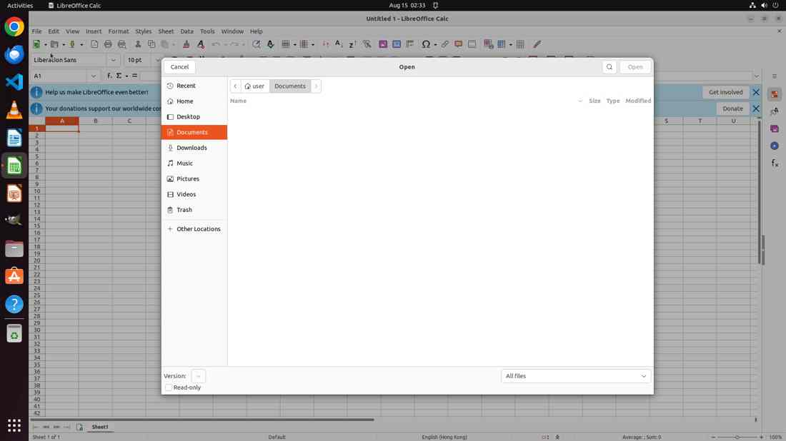
step 5 11:33:07
THINKING3 seconds after clicking 'Open...', the file browser dialog appeared as expected. It's currently in the Documents folder, which is empty. I need to find the volunteer log document to work on collapsing it by programme. Since the Documents folder is empty, I should check other locations. The Downloads folder is a common place for documents, so I'll navigate there to look for the volunteer log file. Clicking on Downloads should show me any files stored there.
EXECUTED (pyautogui in VM)pyautogui.click(467, 357)
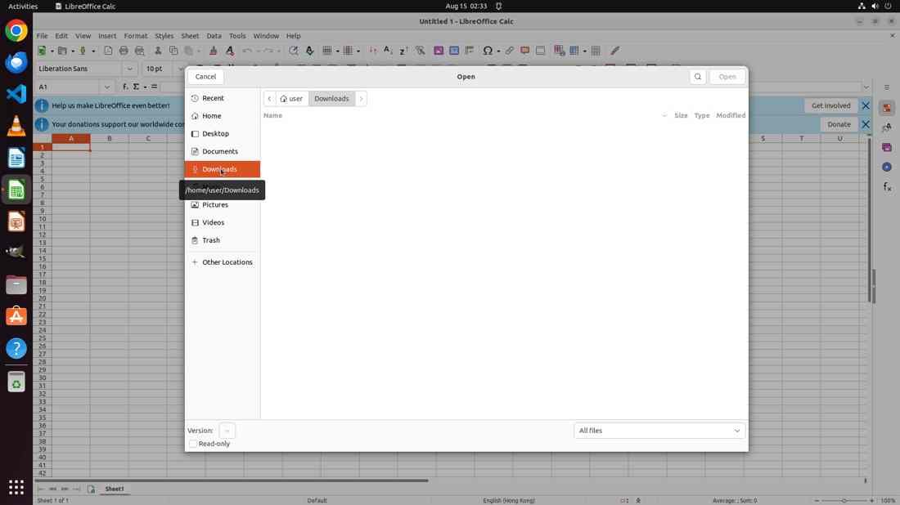
step 6 11:33:13
THINKING2 seconds after clicking Downloads, I'm now in the Downloads folder. It's empty, just like Documents. The path shows '/home/user/Downloads' and there are no files here. I need to find the volunteer log document to collapse it by programme. Since Downloads is empty, I should check the Home directory next, as it's the parent folder and might contain the document or other folders with it. I'll click on 'Home' in the sidebar to navigate there.
EXECUTED (pyautogui in VM)pyautogui.click(449, 245)
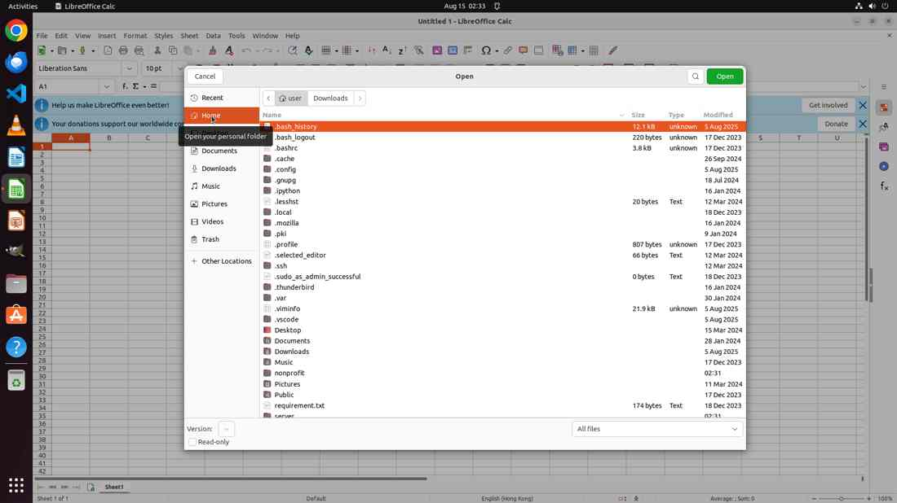
step 7.1 11:33:24
THINKING2 seconds after clicking Home, I can now see the home directory contents. This is promising because I see a 'nonprofit' folder that's likely to contain the volunteer log document. The file list is quite long with many system files and folders, and the volunteer log could be further down in the list. Since I can see the 'nonprofit' folder is visible but there are more items below it, I should scroll down to see if there are any spreadsheet files directly in the home directory or to get a better view of the nonprofit folder. Let me scroll down in this file list to explore more of the home directory contents.
EXECUTED (pyautogui in VM)pyautogui.moveTo(1074, 523)
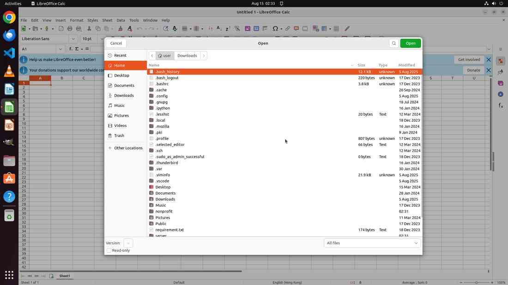
step 7.2 11:33:25
same model call as the previous action
EXECUTED (pyautogui in VM)pyautogui.scroll(-3)
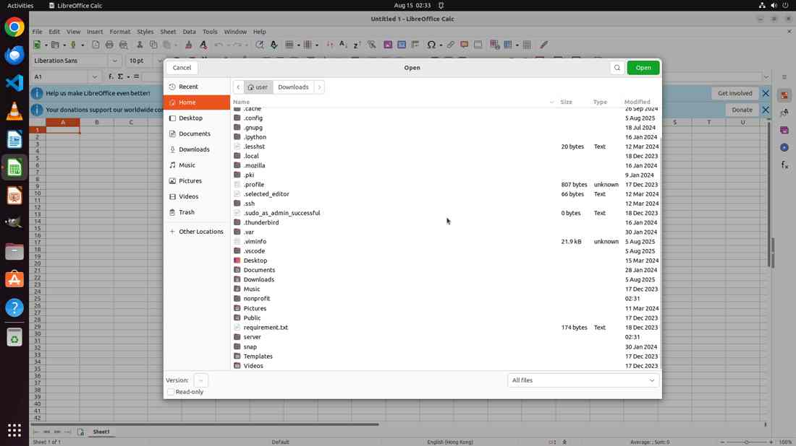
step 8 11:33:31
THINKING3 seconds after scrolling, I can now see the 'nonprofit' folder in the file list. This is exactly what I was looking for. Since the volunteer log document is likely related to nonprofit work, this folder is the most logical place to find it. I need to open this folder to look for the volunteer log spreadsheet. The next action is to double-click on the 'nonprofit' folder to navigate into it and see its contents.
EXECUTED (pyautogui in VM)pyautogui.doubleClick(618, 716)
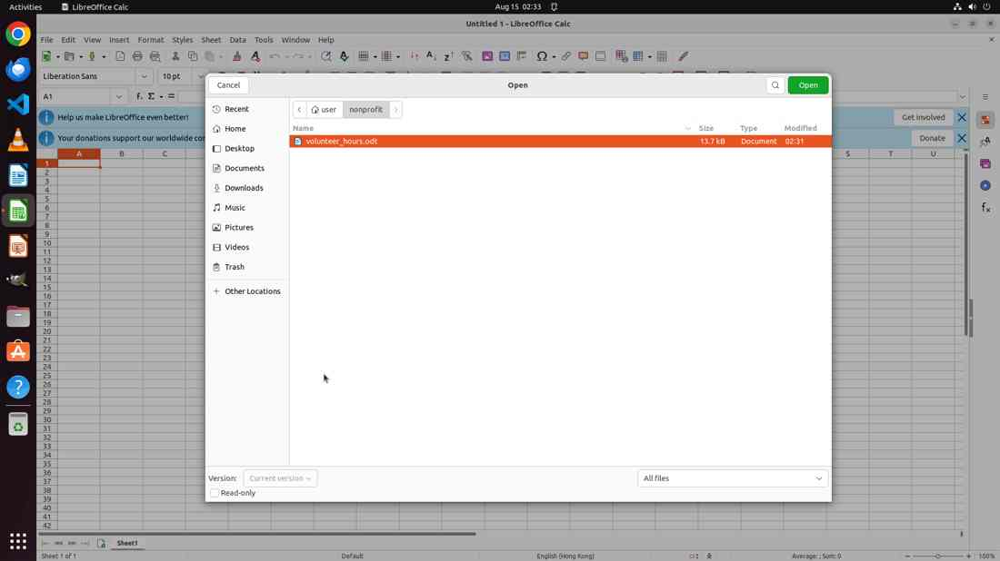
step 9 11:33:37
THINKING1 second after double-clicking the nonprofit folder, I'm now inside it and see 'volunteer_hours.odt' highlighted. This is the volunteer log document I need to collapse by programme. It's an ODT file, likely a Writer document, not a spreadsheet. I'll open it to see its structure and determine how to consolidate the data by summing hours per programme. The next action is to click the green 'Open' button to load the document.
EXECUTED (pyautogui in VM)pyautogui.click(1549, 162)
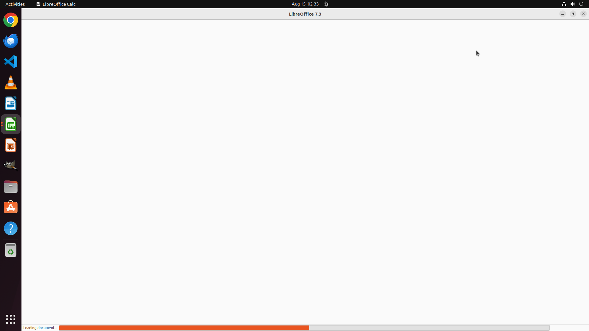
step 10 11:33:48
THINKING2 seconds after clicking the Open button, the document is loading as shown by the progress bar at the bottom. The screen is transitioning from the file browser to the document view. I need to wait for the loading to complete before I can see the volunteer log data and start collapsing it by programme. Once loaded, I'll assess if it's a table in Writer or needs to be converted to Calc for summing hours per programme. For now, I'll wait for the loading to finish.
THINKING1 second after waiting, the document is fully loaded and I can see the volunteer log. It shows programmes like Food Pantry, Tutoring, Shelter Meals, Thrift Shop, and Ride Share, with volunteer names and hours. I need to collapse this so each programme is one line with summed hours. Since this is a Writer document, I'll copy the data to Calc for easier calculations. First, I'll select all content using Ctrl+A, then copy it to paste into Calc.
EXECUTED (pyautogui in VM)pyautogui.hotkey("ctrl", "a")
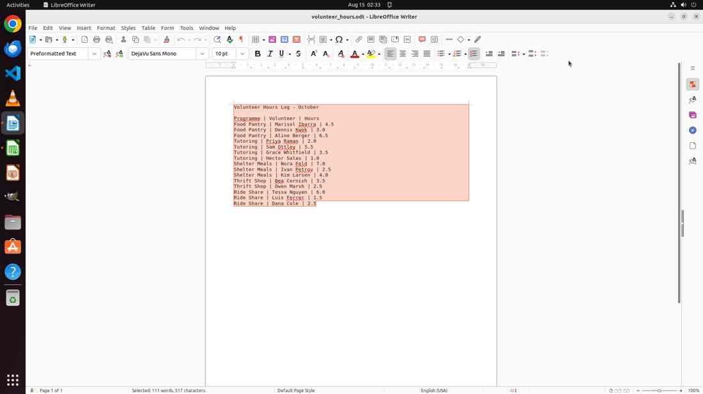
step 12 11:34:05
THINKING1 second after selecting all the text, the document is highlighted in orange and the status bar confirms 111 words and 517 characters are selected. Now I need to copy this data to paste it into Calc for processing. The next step is to copy the selected content using Ctrl+C, which will place it on the clipboard. After copying, I'll open LibreOffice Calc, paste the data, and then work on collapsing it by programme with summed hours.
EXECUTED (pyautogui in VM)pyautogui.hotkey("ctrl", "c")
step 13 11:34:14
THINKING1 second after copying the volunteer log data, the screen looks the same, which is expected since copying doesn't change the visual state. The data is now in the clipboard. Next, I need to open LibreOffice Calc to paste and process it. I'll click the Calc icon in the left dock, which is the green spreadsheet icon below Writer, to launch the application.
EXECUTED (pyautogui in VM)pyautogui.click(32, 405)
step 14 11:34:24
THINKING1 second after clicking the Calc icon, the application has opened successfully. I see a blank spreadsheet with 'Untitled 1 - LibreOffice Calc' in the title bar, and cell A1 is selected. The data I copied earlier from the Writer document is still in the clipboard. Now I need to paste it into this spreadsheet. Since A1 is already selected, I'll use Ctrl+V to paste the data here. After pasting, I can proceed to collapse the entries by programme and sum the hours as required.
EXECUTED (pyautogui in VM)pyautogui.hotkey("ctrl", "v")
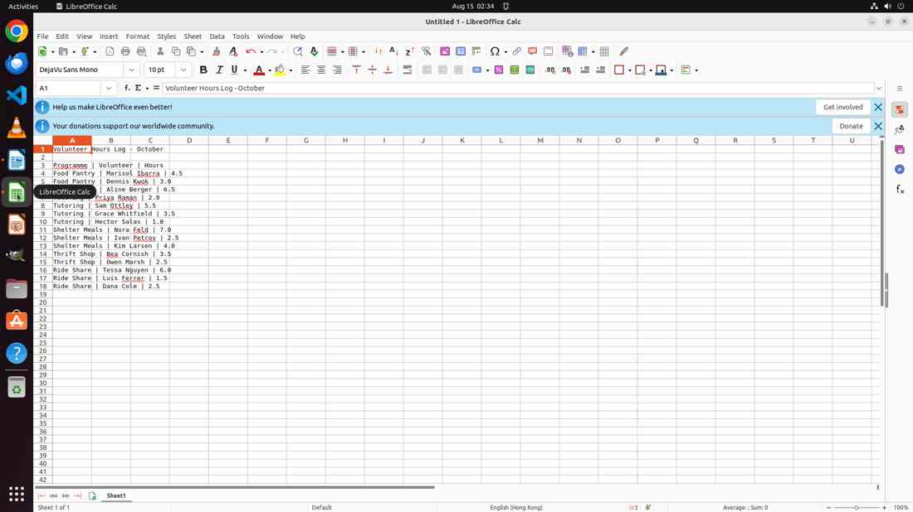
step 15 11:34:33
THINKING1 second after pasting, the data is in Calc but all in column A, separated by pipes. I see programmes like Food Pantry, Tutoring, Shelter Meals, Thrift Shop, and Ride Share with volunteer names and hours. To collapse by programme and sum hours, I need to split this into columns. The Data menu has a 'Text to Columns' feature that can split data using the pipe as a delimiter. This will separate Programme, Volunteer, and Hours into columns A, B, and C, making it easier to create a summary table. Next, I'll click the Data menu to access this feature.
EXECUTED (pyautogui in VM)pyautogui.click(455, 73)
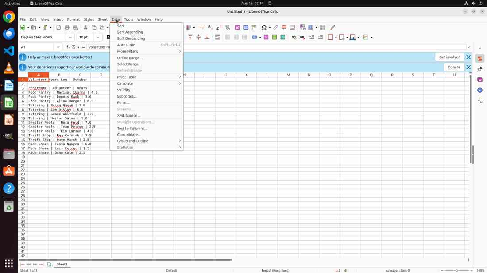
step 16 11:34:43
THINKING1 second after clicking the Data menu, I see the dropdown with options like Sort, Pivot Table, Text to Columns, etc. The data is still in column A, with entries like 'Food Pantry | Marisol Ibarra | 4.5'. To collapse by programme and sum hours, I need to split this into separate columns first. 'Text to Columns...' is the right tool. I'll click it, use the pipe as a delimiter, and split the data into Programme, Volunteer, and Hours. Once separated, I can sum the hours per programme.
EXECUTED (pyautogui in VM)pyautogui.click(520, 503)
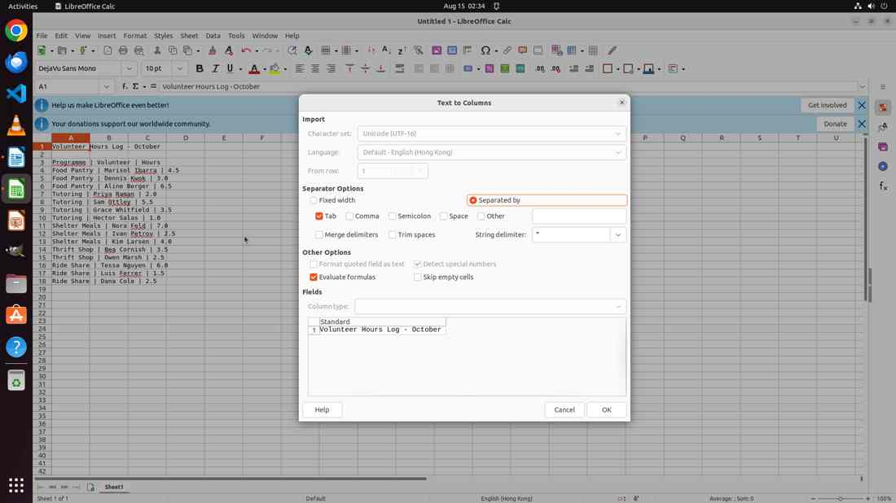
step 17 11:34:58
THINKING1 second after clicking 'Text to Columns', the dialog opened with 'Tab' selected by default. But my data uses pipe delimiters, not tabs. I need to switch to 'Other' and enter '|' as the custom separator. Once I do that, the preview should split the data correctly into Programme, Volunteer, and Hours columns. After confirming, I can sum the hours per programme. Next, I'll click the 'Other' radio button to enable the custom delimiter input.
EXECUTED (pyautogui in VM)pyautogui.click(1030, 461)
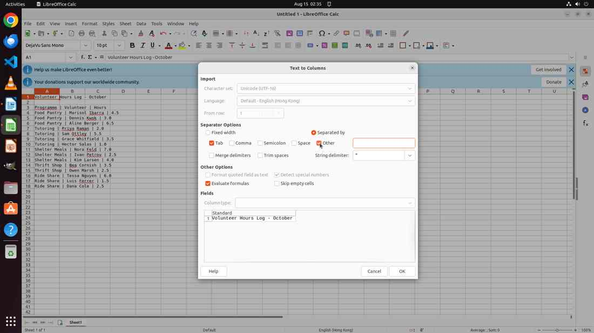
step 18 11:35:10
THINKING2 seconds after checking the 'Other' checkbox, the custom delimiter input field is now active and ready for input. The dialog shows both Tab and Other are selected, but I need to specify the pipe character '|' in the text field to properly split the volunteer log data. The data in column A uses pipes to separate Programme, Volunteer, and Hours. I'll click in the text field next to 'Other' and type '|' to set the correct delimiter. Once entered, the preview should update to show the data properly split into three columns. After that, I can click OK to apply the split and then work on summing hours per programme.
EXECUTED (pyautogui in VM)pyautogui.click(1235, 461)
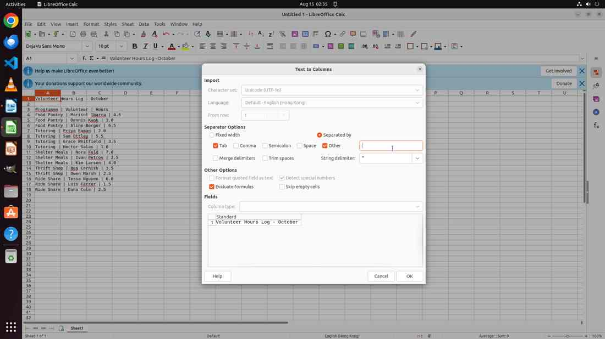
step 19 11:35:21
THINKING1 second after clicking the text field, the cursor is now active in the custom delimiter input box. I can see the blinking cursor, indicating it's ready for input. The 'Other' checkbox is checked, and both Tab and Other are selected, but I need to specify the pipe character '|' as the delimiter. The data in column A uses pipes to separate Programme, Volunteer, and Hours, so I'll type '|' into this field. Once I do, the preview should update to show the data split into three columns. After that, I can click OK to apply the split and then sum the hours per programme.
EXECUTED (pyautogui in VM)pyautogui.typewrite("|")
step 20 11:35:38
THINKING1 second after typing '|' in the custom delimiter field, I can see the pipe character is now in the input box. However, the preview still shows all data in one column, which is unexpected. This might be because both Tab and Other are selected as delimiters, causing confusion. To fix this, I should uncheck the Tab option since I want to use only the pipe character as the delimiter. Once I do that, the preview should update to show the data split correctly into Programme, Volunteer, and Hours columns. After confirming the split looks right, I can click OK to apply the changes and then proceed to sum the hours per programme.
EXECUTED (pyautogui in VM)pyautogui.click(680, 461)
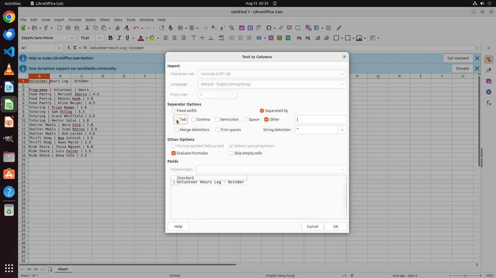
step 21 11:35:47
THINKING1 second after unchecking the Tab delimiter, only the 'Other' option with the pipe '|' character is selected now. The preview still shows all data in one column, which is unexpected. This might be because the preview hasn't updated or the pipe character needs to be re-entered. I'll click the OK button to apply the text-to-columns operation and see if it splits the data correctly into Programme, Volunteer, and Hours columns. If successful, I can then sum the hours per programme.
EXECUTED (pyautogui in VM)pyautogui.click(1299, 878)
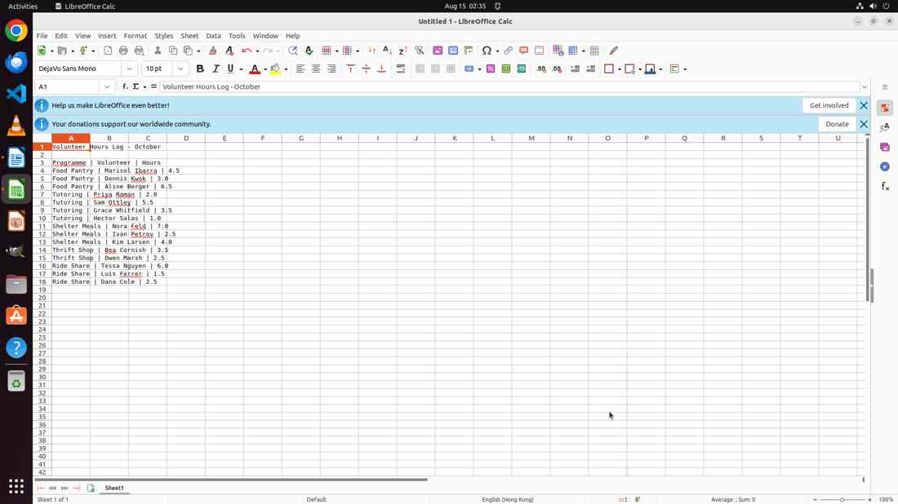
step 22 11:35:55
THINKING1 second after clicking OK in the Text to Columns dialog, the dialog closed but the data remains in column A with pipe delimiters. The split didn't work as expected. I need to try again. First, I'll select column A by clicking its header, then reapply the Text to Columns feature with the pipe delimiter to properly separate the data into Programme, Volunteer, and Hours columns. Once split, I can sum the hours per programme.
EXECUTED (pyautogui in VM)pyautogui.click(149, 292)
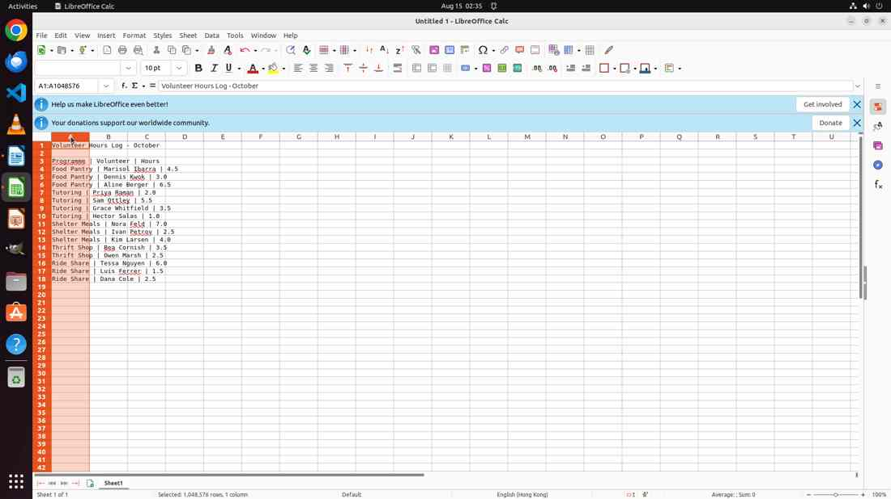
step 23 11:36:04
THINKING1 second after clicking the column A header, the entire column is selected as expected. The data is still in its pipe-delimited format, which means the previous Text to Columns attempt didn't work. Now that I have column A selected, I need to try the Text to Columns feature again. I'll go to the Data menu and select 'Text to Columns...' to split the data properly using the pipe delimiter. Once I get the data into separate columns for Programme, Volunteer, and Hours, I can then work on summing the hours per programme.
EXECUTED (pyautogui in VM)pyautogui.click(455, 73)
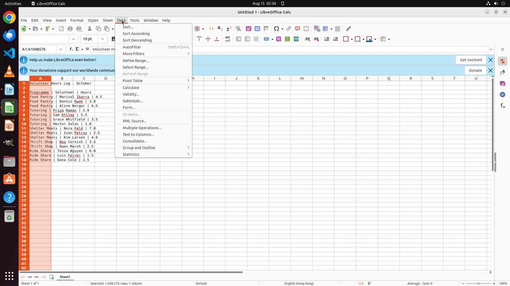
step 24 11:36:18
THINKING1 second after clicking the Data menu, it's open and showing the 'Text to Columns...' option. Column A is still selected with the orange highlight, which is good. I need to click 'Text to Columns...' to split the pipe-delimited data into separate columns for Programme, Volunteer, and Hours. Once I do that, I can sum the hours per programme. The next step is to click 'Text to Columns...' in the Data menu.
EXECUTED (pyautogui in VM)pyautogui.click(520, 503)
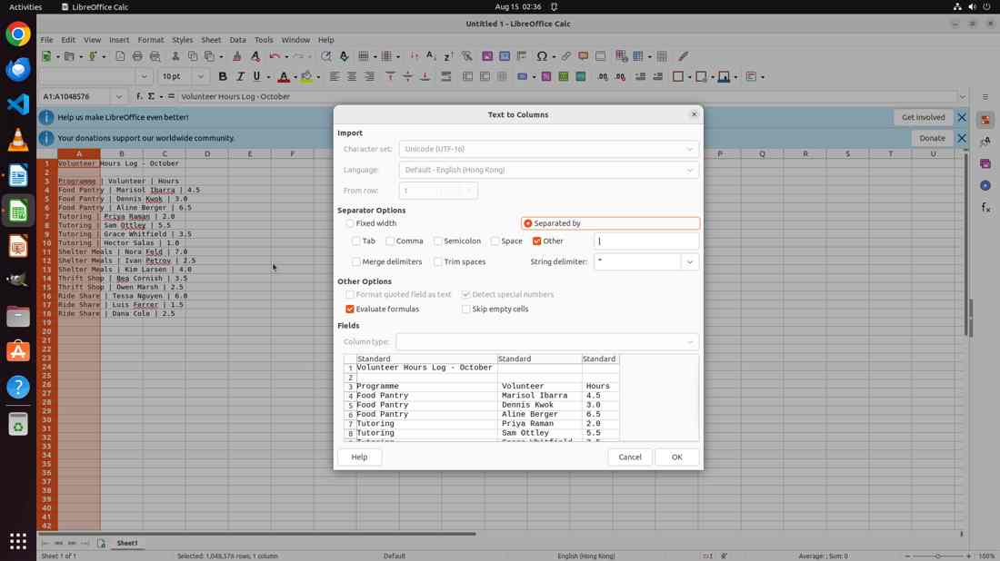
step 25 11:36:25
THINKING1 second after clicking 'Text to Columns...', the dialog opened and the pipe delimiter is already set correctly. The preview shows the data will split into three columns: Programme, Volunteer, and Hours. This is exactly what I need. The 'Other' checkbox is checked with '|' in the field, and the preview looks good. I can click OK now to apply the split, then sum the hours per programme.
EXECUTED (pyautogui in VM)pyautogui.click(1299, 878)
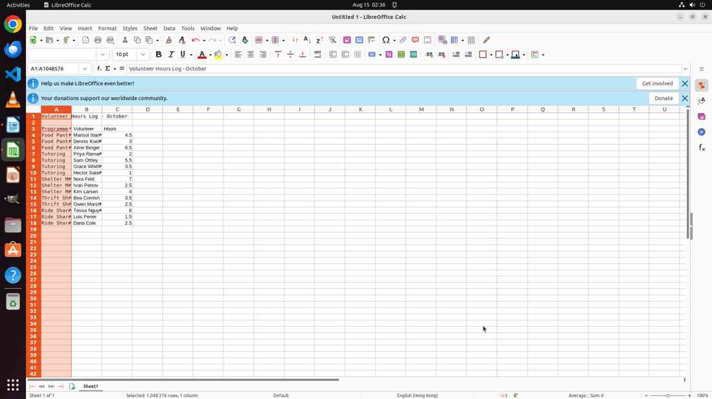
step 26 11:36:35
THINKING1 second after clicking OK in the Text to Columns dialog, the data is now properly split into three columns: Programme in A, Volunteer in B, and Hours in C. The split worked perfectly! Now I need to collapse this data by programme and sum the hours. I see programmes like Food Pantry, Tutoring, Shelter Meals, Thrift Shop, and Ride Share. To do this, I should create a summary table. I'll click on cell E1 to start building it there, with headers for Programme and Total Hours, then use SUMIF to calculate totals per programme.
EXECUTED (pyautogui in VM)pyautogui.click(476, 314)
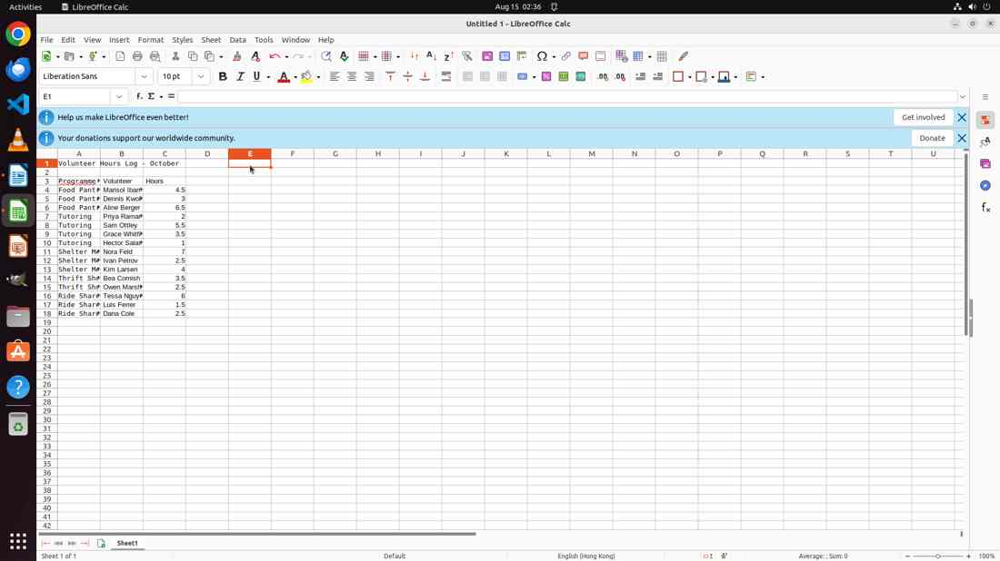
step 27 11:36:49
THINKING1 second after clicking cell E1, I'm now positioned to create the summary table. The data is split correctly: Programme in column A, Volunteer in B, and Hours in C. I can see programmes like Food Pantry, Tutoring, Shelter Meals, Thrift Shop, and Ride Share. Now I need to build a summary table starting here with 'Programme' as the header in E1, then 'Total Hours' in F1. After that, I'll list each unique programme and use SUMIF to calculate the totals per programme.
EXECUTED (pyautogui in VM)pyautogui.typewrite("Programme")
step 28 11:36:59
THINKING1 second after typing 'Programme' in cell E1, the header is now in place. I can see it both in the cell and the formula bar. The data is properly split into columns A (Programme), B (Volunteer), and C (Hours). Now I need to create the second header 'Total Hours' in F1 to complete the summary table structure. I'll press Tab to move to F1 and type the header.
THINKING1 second after pressing Tab, I'm now in cell F1. The cell reference box shows 'F1', and it's highlighted in orange. Cell E1 has 'Programme' as the first header. Now I need to type 'Total Hours' in F1 to complete the summary table headers. Once done, I'll list each unique programme in column E and use SUMIF formulas in column F to calculate the total hours per programme from the data in columns A and C.
TOOL CALL<tool_call>
<function=computer_use>
<parameter=action>
type
</parameter>
<parameter=text>
Total Hours
</parameter>
</function>
</tool_call>
EXECUTED (pyautogui in VM)pyautogui.typewrite("Total Hours")
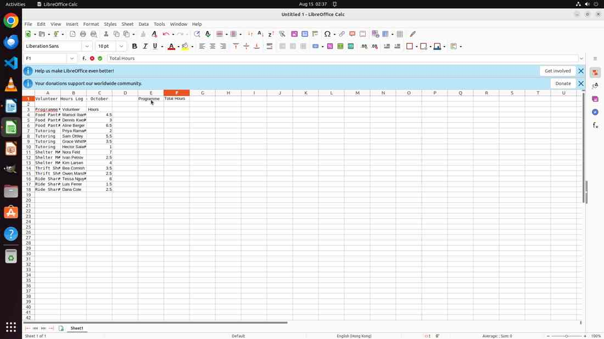
step 30 11:37:22
THINKING1 second after typing 'Total Hours', the header is now in F1, completing the summary table structure with 'Programme' in E1 and 'Total Hours' in F1. The source data is properly split into columns A (Programme), B (Volunteer), and C (Hours). Now I need to populate the summary table with unique programme names and their total hours. I'll start by clicking cell E2 to begin entering the first programme name, then use SUMIF formulas in column F to calculate the totals for each programme.
EXECUTED (pyautogui in VM)pyautogui.press("return")
step 31 11:37:31
THINKING1 second after pressing Enter, I'm now in cell E2, which is where I need to start entering the programme names. The summary table headers are set up correctly with 'Programme' in E1 and 'Total Hours' in F1. The source data in columns A-C shows the programmes: Food Pantry, Tutoring, Shelter Meals, Thrift Shop, and Ride Share. Now I need to populate E2:E6 with these unique programme names, then use SUMIF formulas in F2:F6 to calculate the total hours for each programme. I'll start by typing 'Food Pantry' in E2.
EXECUTED (pyautogui in VM)pyautogui.typewrite("Food Pantry")
step 32 11:37:41
THINKING1 second after typing 'Food Pantry' in E2, the text is entered and visible in both the cell and formula bar. The summary table structure is set with headers in E1 and F1, and I've started the programme list in E2. Now I need to continue adding the remaining programmes: Tutoring, Shelter Meals, Thrift Shop, and Ride Share in E3 through E6. After that, I'll create SUMIF formulas in column F to calculate total hours for each programme. The next step is to press Enter to move to E3 and type the next programme name.
EXECUTED (pyautogui in VM)pyautogui.press("return")
step 33 11:37:52
THINKING1 second after pressing Enter, I'm now in cell E3. 'Food Pantry' is confirmed in E2, and the cursor has moved down as expected. The summary table is taking shape with headers in E1 and F1, and the first programme name in E2. Now I need to continue entering the remaining programme names: Tutoring, Shelter Meals, Thrift Shop, and Ride Share in cells E3 through E6. Once all programmes are listed, I'll use SUMIF formulas in column F to calculate the total hours for each. The next step is to type 'Tutoring' in E3.
EXECUTED (pyautogui in VM)pyautogui.typewrite("Tutoring")
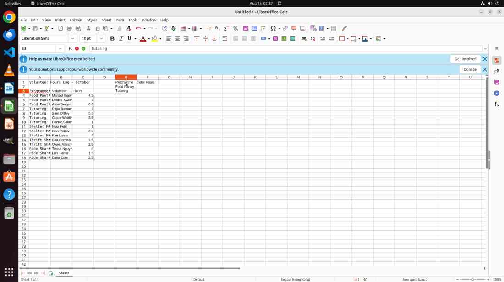
step 34 11:38:01
THINKING1 second after typing 'Tutoring' in E3, the text is entered and visible. The summary table is progressing well with 'Programme' and 'Total Hours' headers, 'Food Pantry' in E2, and 'Tutoring' in E3. Now I need to continue adding the remaining programmes: Shelter Meals, Thrift Shop, and Ride Share in cells E4 through E6. Once all programmes are listed, I'll use SUMIF formulas in column F to calculate total hours for each. The next step is to press Enter to move to E4 and continue entering programme names.
EXECUTED (pyautogui in VM)pyautogui.press("return")
step 35 11:38:13
THINKING1 second after pressing Enter, I'm now in cell E4. The summary table is coming together with 'Programme' and 'Total Hours' as headers, 'Food Pantry' in E2, and 'Tutoring' in E3. I need to continue adding the remaining programmes: Shelter Meals, Thrift Shop, and Ride Share in cells E4 through E6. Once all programmes are listed, I'll use SUMIF formulas in column F to calculate total hours for each. The next step is to type 'Shelter Meals' in E4.
EXECUTED (pyautogui in VM)pyautogui.typewrite("Shelter Meals")
step 36 11:38:23
THINKING1 second after typing 'Shelter Meals' in E4, the text is now entered and visible in both the cell and formula bar. The summary table is progressing well with headers in E1 and F1, and three programmes listed: Food Pantry, Tutoring, and Shelter Meals in E2-E4. I still need to add 'Thrift Shop' and 'Ride Share' in E5 and E6. Once all programmes are entered, I'll use SUMIF formulas in column F to calculate total hours for each. The next step is to press Enter to move to E5 and continue entering programme names.
EXECUTED (pyautogui in VM)pyautogui.press("return")
step 37 11:38:33
THINKING1 second after pressing Enter, I'm now in cell E5. The summary table has headers in E1 and F1, and three programmes entered: Food Pantry, Tutoring, and Shelter Meals in E2-E4. I still need to add 'Thrift Shop' and 'Ride Share' in E5 and E6. Once all programmes are listed, I'll use SUMIF formulas in column F to calculate total hours for each. The next step is to type 'Thrift Shop' in E5.
EXECUTED (pyautogui in VM)pyautogui.typewrite("Thrift Shop")
step 38 11:38:44
THINKING1 second after typing 'Thrift Shop' in E5, the text is entered and visible. The summary table now has four programmes listed: Food Pantry, Tutoring, Shelter Meals, and Thrift Shop in E2-E5. I still need to add 'Ride Share' in E6 to complete the programme list. Once that's done, I'll use SUMIF formulas in column F to calculate the total hours for each programme. The next step is to press Enter to move to E6 and enter the final programme name.
EXECUTED (pyautogui in VM)pyautogui.press("return")
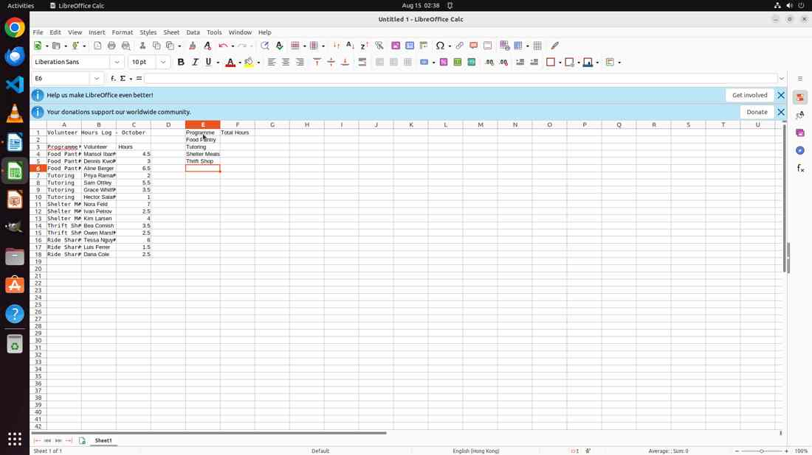
step 39 11:38:58
THINKING1 second after pressing Enter, I'm now in cell E6. The summary table has headers in E1 and F1, and four programmes listed: Food Pantry, Tutoring, Shelter Meals, and Thrift Shop in E2-E5. I still need to add 'Ride Share' in E6 to complete the programme list. Once that's done, I'll use SUMIF formulas in column F to calculate the total hours for each programme. The next step is to type 'Ride Share' in E6.
EXECUTED (pyautogui in VM)pyautogui.typewrite("Ride Share")
step 40 11:39:10
THINKING1 second after typing 'Ride Share', I've completed entering all five programme names in the summary table. The list now includes Food Pantry, Tutoring, Shelter Meals, Thrift Shop, and Ride Share in cells E2-E6. The structure is set with headers in E1 and F1. Now I need to calculate the total hours for each programme using SUMIF formulas in column F. I'll start by clicking on cell F2 to enter the first formula that will sum all hours from column C where the programme in column A matches 'Food Pantry'.